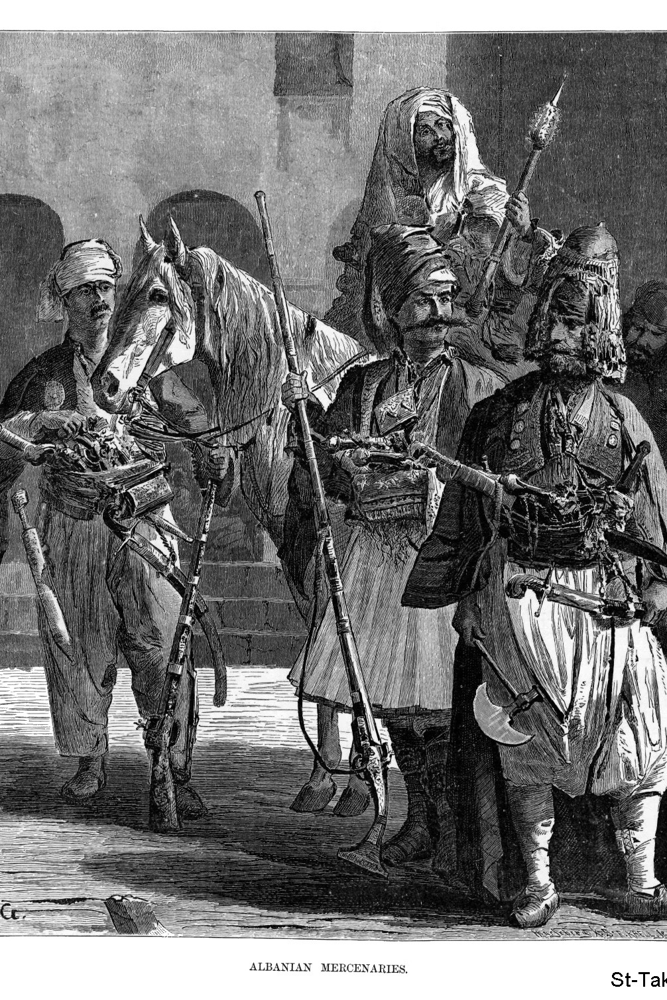
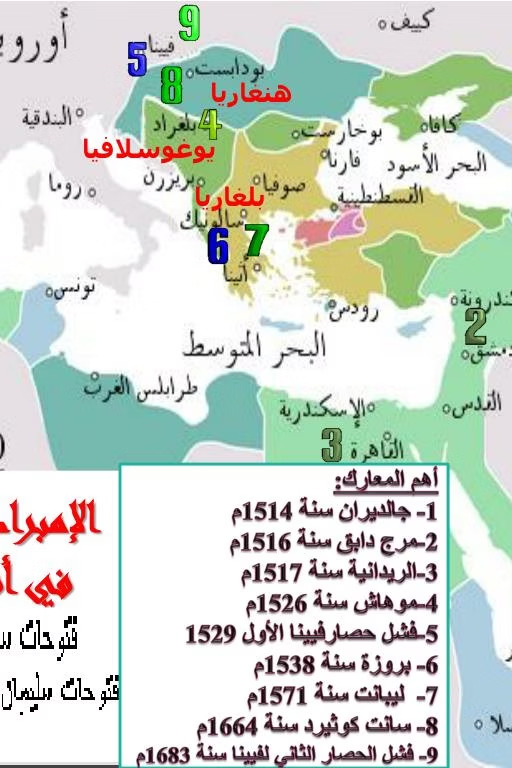
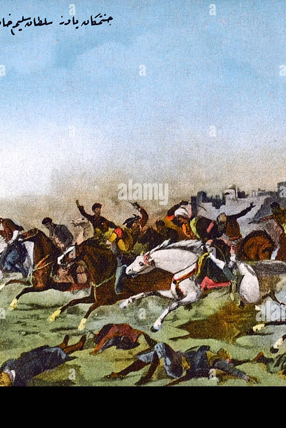
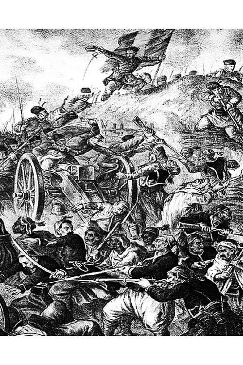

للاستزادة: شرح المرشد السياحي بالإنجليزية
🎙️
TOUR GUIDE SPOKEN SCRIPT
Explaining the Ottoman Conquest & The Fall of the Mamluks to Foreign Guests
▼
Explaining the Ottoman Conquest & The Fall of the Mamluks to Foreign Guests
"Distinguished guests, standing before the colossal twin minarets of Bab Zuweila in Historic Cairo, we look upon the very gate where the medieval Sultanate of Egypt met its dramatic end. For over two and a half centuries—from 1250 to 1517 AD—Egypt was ruled by the Mamluks, an extraordinary warrior-caste originally imported as enslaved Turkic and Circassian youths who ascended to sovereign power, divided between the Bahri Mamluks stationed on Roda Island and the Burji Mamluks garrisoned within the towers of Saladin’s Citadel."
"By the early 16th century, a rising titan reshaped the Islamic world: the Ottoman Empire under Sultan Selim I ('The Grim'). Armed with disciplined Janissary infantry and cutting-edge field artillery, Selim crushed the Safavids at Chaldiran in 1514, routed Sultan Qansuh al-Ghawri at the Battle of Marj Dabiq in 1516, and crossed the treacherous Sinai desert into Cairo."
"On January 23, 1517, at the Battle of Ridaniya (modern Abbasiya), Egypt’s valiant last sultan, Al-Ashraf Tuman Bay, launched a desperate cavalry counter-charge with Venetian cannons, but was betrayed by Bedouin allies. In April 1517, Tuman Bay was hanged at Bab Zuweila amidst public weeping. Egypt ceased to be an empire's heartland and became an Ottoman province, while Selim claimed the title of 'Servant of the Two Holy Sanctuaries' in Mecca and Medina."
📖
قاموس ومصطلحات المحاضرة للمرشد (اضغط هنا لفتح / طي القاموس)
TOUR GUIDE BILINGUAL GLOSSARY
▼
قاموس ومصطلحات المحاضرة للمرشد (اضغط هنا لفتح / طي القاموس)
TOUR GUIDE BILINGUAL GLOSSARY💡 تنبيه للمرشد السياحي: هذه المصطلحات والكلمات مستخرجة من المنهج الأكاديمي المعتمد، ومزودة بالنطق الصوتي والمعنى السياقي للمرشد:
المماليك البحرية
المماليك البحرية
Bahri Mamluks
/ˈbɑːhri ˈmæmluːks/ (1250–1382 AD)
▼
المماليك البحرية
المعنى السياقي للمرشد:سلاطين المماليك من أصل تركي قفجاقي؛ سموا بالبحرية لأن معسكراتهم كانت بجزيرة الروضة بنهر النيل، أولهم أيبك وآخرهم برقوق (25 سلطاناً).
المماليك البرجية
المماليك البرجية
Burji Mamluks
/ˈbʊrdʒi ˈmæmluːks/ (1382–1517 AD)
▼
المماليك البرجية
المعنى السياقي للمرشد:سلاطين الشراكسة الذين اتخذوا من أبراج قلعة الجبل بالقاهرة مقراً لهم؛ أولهم الظاهر برقوق وآخرهم طومان باي (24 سلطاناً).
معركة مرج دابق
معركة مرج دابق
Battle of Marj Dabiq
/ˈbætl əv mɑːrdʒ dɑːbɪk/ (1516 AD)
▼
معركة مرج دابق
المعنى السياقي للمرشد:المعركة الفاصلة شمال حلب؛ انتصر فيها سليم الأول على قنصوه الغوري بفضل المدفعية الحديثة وخيانة خاير بك، وبها سقطت الشام بيده.
معركة الريدانية
معركة الريدانية
Battle of Ridaniya
/ˈbætl əv rɪdɑːˈniːjə/ (Jan 1517 AD)
▼
معركة الريدانية
المعنى السياقي للمرشد:معركة حاسمة بالعباسية عند مشارف القاهرة؛ هزم فيها سليم الأول السلطان طومان باي ودخل العاصمة وأنهى استقلال الدولة المملوكية.
السلطان طومان باي
السلطان طومان باي
Sultan Tuman Bay
/tuːmɑːn baɪ/ (Al-Ashraf)
▼
السلطان طومان باي
المعنى السياقي للمرشد:آخر سلاطين المماليك الشراكسة؛ قاد المقاومة الشعبية وقتال الشوارع بالقاهرة، سلمه شيخ بدو البحيرة غدراً فشُنق على باب زويلة.
السلطان سليم الأول
السلطان سليم الأول
Sultan Selim I (The Grim)
/sʊlˈtɑːn sɛˈliːm/ (Yavuz)
▼
السلطان سليم الأول
المعنى السياقي للمرشد:تاسع سلاطين بني عثمان؛ فتح الشام ومصر والحجاز، وأعلن نفسه «خادماً للحرمين الشريفين» ونقل الخلافة الإسلامية للآستانة.
باب زويلة
باب زويلة
Bab Zuweila
/bɑːb zʊˈweɪlə/ (South Gate)
▼
باب زويلة
المعنى السياقي للمرشد:البوابة الجنوبية الشهيرة لسور القاهرة الفاطمي؛ علقت عليها رؤوس رسل هولاكو المغول، وشُنق على قوسها طومان باي عام 1517م.
معركة جالديران
معركة جالديران
Battle of Chaldiran
/ˈtʃɑːldɪrɑːn/ (1514 AD)
▼
معركة جالديران
المعنى السياقي للمرشد:المعركة التي سحق فيها سليم الأول جيش الشاه إسماعيل الصفوي، واختل بها توازن القوى بالشرق الأدنى مما عجل بصدامه مع المماليك.
خادم الحرمين الشريفين
خادم الحرمين الشريفين
Servant of the Two Sanctuaries
/ˈsɜːrvənt əv ðə tuː ˈsæŋktʃuɛriz/
▼
خادم الحرمين الشريفين
المعنى السياقي للمرشد:اللقب الديني السيادي الأرفع الذي اتخذه سليم الأول في الجامع الأموي بدمشق عام 1516م بعد خضوع الحجاز له، وأصبح لقباً لسلاطين آل عثمان.
الأمير جم
الأمير جم
Prince Cem (Jem Sultan)
/dʒɛm sʊlˈtɑːn/ (1481 AD)
▼
الأمير جم
المعنى السياقي للمرشد:شقيق السلطان بايزيد الذي نافسه على العرش ولجأ للسلطان المملوكي قايتباي في مصر؛ حمايته شكلت أحد بؤر التوتر التاريخية بين الدولتين.
الصدر الأعظم سنان باشا
الصدر الأعظم سنان باشا
Grand Vizier Sinan Pasha
/sɪˈnɑːn pɑːˈʃɑː/
▼
الصدر الأعظم سنان باشا
المعنى السياقي للمرشد:قائد طلائع الجيش العثماني؛ هزم المماليك عند خان يونس بغزة، وقُتل في معركة الريدانية أثناء محاولة طومان باي الفدائية لاغتيال سليم.
رسوم التجارة الترانزيت
رسوم التجارة الترانزيت
Transit Customs & Dues
/ˈtrænsɪt ˈkʌstəmz/
▼
رسوم التجارة الترانزيت
المعنى السياقي للمرشد:الرسوم والضرائب الهائلة التي كان يجنيها المماليك من تجارة التوابل والحرير القادمة من الهند عبر البحر الأحمر وموانئ مصر نحو أوروبا.
أولاً: مصر قُبيل الحكم العثماني — دولتا المماليك البحرية والبرجية
أصل المماليك ونشأة دولتهم في مصر والشام:
كانت مصر قُبيل دخولها تحت الحكم العثماني خاضعة لحكم المماليك؛ والمماليك في أصلهم هم مجموعة من «الأتراك» الذين أصبحوا أرقاء نتيجة للأسر في الحروب، أو الشراء من أسواق النخاسة على يد سلاطين الدولة الأيوبية، وتدريبهم على الفروسية والقتال.
وقد مرت دولة المماليك بمرحلتين تاريخيتين رئيسيتين استمرتا قرنين ونصف من الزمان:
مرحلة دولة المماليك البحرية:
سُموا بـ «البحرية» لأن معسكراتهم وثكناتهم الحربية كانت مقامة في جزيرة الروضة وسط نهر النيل (بحر النيل).
- أول سلاطينها: المعز عز الدين أيبك (1250–1257م) الذي تزوج شجرة الدر.
- آخر سلاطينها: السلطان الصالح حاجي / برقوق (1382م).
- عدد سلاطينها: 25 سلطاناً (بينهم قطز والظاهر بيبرس وقلاوون والناصر محمد).
مرحلة دولة المماليك البرجية (الشراكسة):
سُموا بـ «البرجية» نسبة لمحل إقامتهم وثكناتهم في أبراج قلعة الجبل (قلعة صلاح الدين) بالقاهرة.
- أول سلاطينها: السلطان الظاهر سيف الدين برقوق بن أنس (1382–1398م).
- آخر سلاطينها: السلطان الأشرف طومان باي (1517م).
- عدد سلاطينها: 24 سلطاناً (انتهت بقتل طومان باي على يد سليم الأول وإلحاق مصر بآل عثمان).

شكل (١): فرسان وأمراء المماليك وطبيعة تكوينهم العسكري (وثيقة تاريخية)طبيعة حكم المماليك: الفوضى والدسائس والعزلة:
كان حكم المماليك في معظمه حكماً فوضوياً اتسم بالدسائس والفتن؛ إذ كانوا منقسمين شيعاً وأحزاباً ينتسبون إلى سلاطينهم (مثل: الأشرفيون، الظاهريون، المؤيدون...). وكانوا في نزاع دموي مستمر بصدد كل تولية جديدة، فذهب الأمن وتفشى الجهل وتوقفت حركة العمران.
عزلة المماليك عن الشعب: كان تكوين دولتهم تكويناً شاذاً؛ فلم يندمجوا مع الأهالي لأسباب سياسية واقتصادية، إذ كانوا يخشون الاندماج في الشعب حتى لا يضيع المقوم الأساسي لامتيازاتهم العسكرية والطبقية.
ثانياً: نشأة الدولة العثمانية وتوسعها في الأناضول والبلقان
الأصول والبدايات في بلاد الأناضول:
يعود أصل العثمانيين إلى قبائل تركية فرت من بلاد آسيا الوسطى أمام زحف جحافل المغول. وقد اعتنق جدهم عثمان بن أرطغرل بن سليمان شاه الإسلام، واستوطن هو وأتباعه شمال غربي الأناضول، ونجح في تأسيس إمارة ودولة تنسب إليه في أوائل القرن الرابع عشر الميلادي.
توسعت الدولة تدريجياً في البلقان والأناضول على حساب ما تبقى من أملاك البيزنطيين ودول الصقالبة وإمارات اللاتين والإمارات التركية المجاورة.
ورغم توقف التوسع لفترة وجيزة عقب كارثة غارة تيمورلنك على الأناضول (أوائل القرن 15م)، استعادت الدولة قوتها وبلغت مطلع القرن السادس عشر الميلادي وهي القوة المهيمنة الكبرى في البلقان والأناضول، مستهدفة فرض الوحدة والاستقرار في أرجاء الشرق الأدنى.

شكل (٢): خريطة معارك وتوسعات الدولة العثمانية (وثيقة تاريخية)ثالثاً: أسباب ضم العثمانيين لمصر والشام (الأسباب الستة)
دفعت العثمانيين ستة أسباب استراتيجية وسياسية واقتصادية لضم مصر والشام وإنهاء دولة المماليك:
كان العثمانيون يسيطرون على طرق التجارة البرية إلى آسيا الصغرى والبحر الأسود، بينما كان المماليك يسيطرون على ممر التجارة العالمية العابرة من الشرق الأقصى والهند عبر البحر الأحمر والموانئ المصرية وسواحل الشام، فتطلع العثمانيون للرسوم الجمركية الهائلة التي يجنيها المماليك.
كانت السيطرة على سواحل مصر والشام حيوية لمصالح الدولة العثمانية البحرية وتأمين نفوذها في حوض البحر الأبيض المتوسط والمراكز والجزر الاستراتيجية فيه.
ابتلاع سلطنة المماليك وما تشتمل عليه من مدن مقدسة في الحجاز (مكة والمدينة) وفلسطين (القدس)، يُظهر السلطان العثماني بمظهر رئيس العالم الإسلامي، والمسيطر على أماكن حج المسيحيين في فلسطين.
ساهم تجاور حدود الدولتين في مناطق الشرق الأدنى والشاطئ الشرقي للمتوسط في إشعال الرغبة في الصدام؛ لا سيما وأن العثمانيين جُبلوا منذ نشأتهم على حب التوسع الإمبراطوري.
إيواء المماليك لخصوم السلاطين، كما حدث مع الأمير جم شقيق السلطان بايزيد بعد هزيمته في موقعة أوكي (1481م)؛ حيث وفّر له السلطان قايتباي الحماية بمصر وأمده بالمال والسلاح لقتال أخيه قبل فراره لأوروبا ومقتله.
عدم وقوف المماليك مع العثمانيين ضد الصفويين؛ بل وإجراء مفاوضات سرية بين الغوري والشاه إسماعيل الصفوي، ومحاولة إعاقة المؤن، وخروج الغوري للشام. غير أن سليم سحق الصفويين في جالديران 1514م ثم التفت للمماليك.
رابعاً: ضم الشام — معركة مرج دابق الحاسمة (أغسطس 1516م)

شكل (٣): معركة مرج دابق وصدام الفرسان مع المدفعية (وثيقة تاريخية)أسباب انتصار العثمانيين وانهيار المماليك:
التقى الجيشان في سهل مرج دابق (شمال حلب) في أغسطس 1516م. وحقق العثمانيون نصراً ساحقاً بفضل:
- التفوق العسكري والمدفعية: توافر فرق المدفعية الحديثة والبنادق النارية التي ناسبت حجم الجيش.
- دقة التنظيم والانضباط: خضوع الجيش العثماني لقيادة موحدة حازمة تحت إمرة سليم الأول.
- الخيانة والتفكك المملوكي: الخيانة التي دبت في صفوف المماليك (انحياز خاير بك نائب حلب للعثمانيين)، والتنافر الشديد بين طوائف المماليك وعدم ثقتهم بأوامر السلطان قنصوه الغوري الذي سقط صريعاً في المعركة.
نتائج معركة مرج دابق:
نتائج معركة مرج دابق الحاسمة (أغسطس 1516م):
لم تكن مرج دابق مجرد انتصار موضعي، بل كانت معركة حاسمة قررت مصير دولة المماليك وأحلت مكانها الدولة العثمانية في زعامة العالم الإسلامي.
خامساً: ضم مصر — معركة الريدانية واستشهاد طومان باي (1517م)
١. كتاب سليم إلى طومان باي ومحاذير الزحف على مصر:
أرسل السلطان سليم كتاباً شديد اللهجة إلى السلطان الأشرف طومان باي (الملك الصالح وخليفة الغوري) يطلب الاعتراف بالسيادة العثمانية، وأن تُسك العملة باسم سليم، وأن يكون نائباً له في حكم مصر حتى غزة.
رد طومان باي: كان من المستحيل على دولة عريقة كمصر التسليم؛ فرفض طومان باي الشروط، وقَتل وفد التفاوض، وبذل وسعه لتنظيم الدفاع، واشترى بنادق ومدافع حديثة من أهل البندقية، وحاول إقامة خط دفاع عند الصالحية.
كان لدى سليم مخاوف جسيمة: مخاطر اجتياز صحراء سيناء الشاسعة وتعرض خطوط مواصلاته للقطع، وتوقعه مقاومة ضارية ومستميتة من المماليك لاعتبارهم مصر مركز ثقلهم وآخر معاقل وجودهم.

شكل (٤): ملحمة معركة الريدانية والاشتباك عند العباسية (وثيقة تاريخية)٢. الزحف والاشتباك في معركة الريدانية:
قرر سليم التقدم بعد استسلام القدس ويافا وغزة. وتغلبت طلائع العثمانيين بقيادة الصدر الأعظم سنان باشا على حملة مملوكية عند خان يونس بمساعدة بدو سيناء، مما أرهب بدو الشرقية فقدموا ولاءهم لسليم.
وفي صحراء الريدانية (العباسية بالقاهرة)، اصطدم الجيشان في 23 يناير 1517م؛ التف العثمانيون حول مدافع طومان باي الثابتة وفاجأوه من الخلف بفضل مدافعهم المتحركة، فهُزم المماليك ودخل العثمانيون القاهرة في 26 يناير 1517م.
٣. حرب الشوارع واستشهاد طومان باي على باب زويلة:
حرب الشوارع واستشهاد طومان باي على باب زويلة (إبريل 1517م):
خاض طومان باي والمصريون حرب شوارع دامية ضد جيش سليم داخل أحياء القاهرة استمرت عدة أيام كبدت العثمانيين خسائر فادحة وقُتل فيها سنان باشا.
عندما رأى طومان باي قبول العرض السابق بالنيابة، رفض سليم بعدما أحسن استخدام الأمراء المماليك المنشقين المنضمين لجيشه. فلجأ طومان باي إلى شيخ بدو البحيرة (حسن بن مرعي) الذي حلف له على المصحف بحمايته، لكنه غدر به وسلمه لسليم الأول.
افتح تدريبات وأسئلة الدرس
بنك الأسئلة واختبار الفهم التفاعلي
اختبر استيعابك للمحاضرة الأولى (٧ أسئلة تخصصية دقيقة)
اختر الإجابة الصحيحة لتكتشف التعليل التاريخي والإرشادي فوراً.